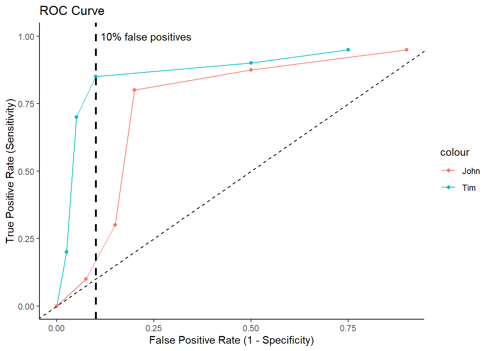
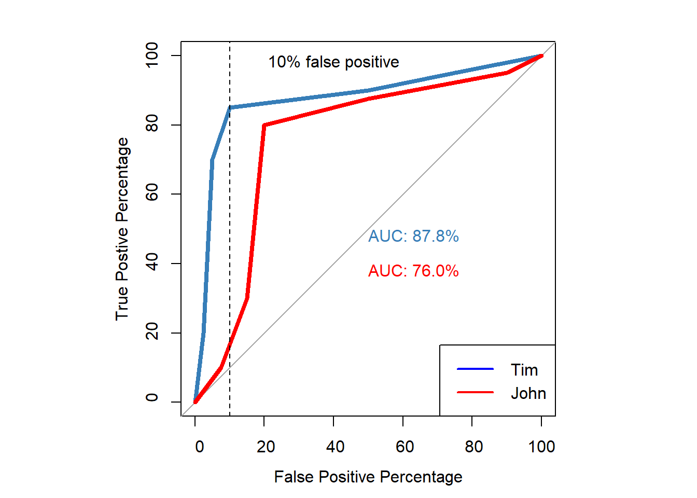
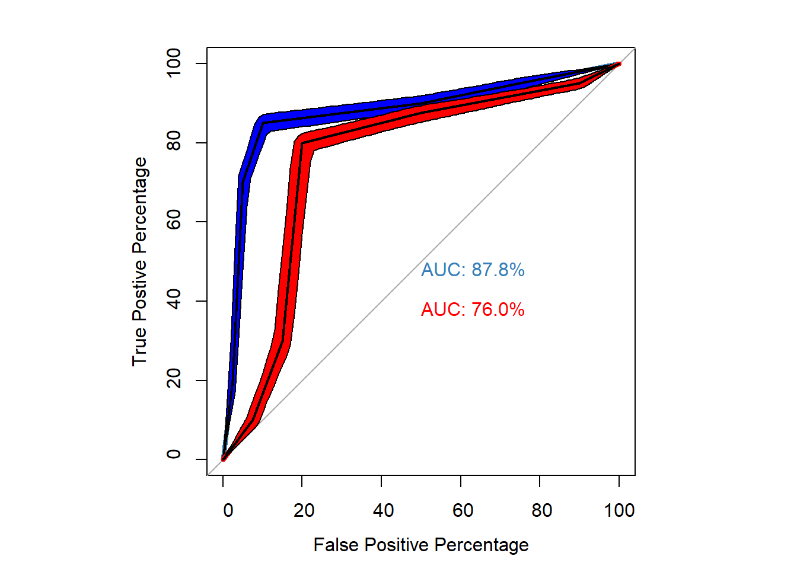
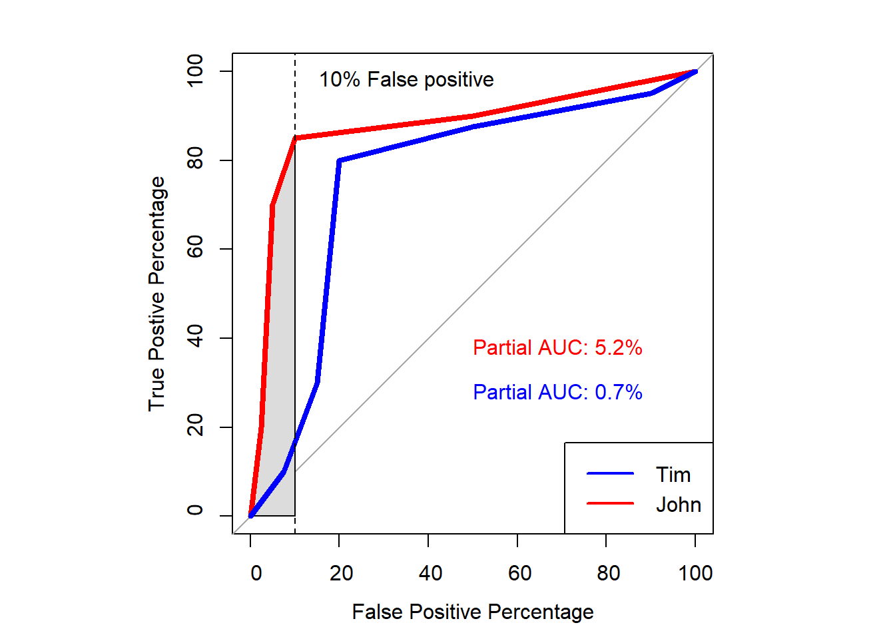

ROC Curve Analysis in Memory Research (Brady et al. 2022)
ROC cuve analysis of Brady et al. (2022).
- In this blogpost, I will show how to construct the datasets of Tim and John and the Receiver Operator Characteristic (ROC) curves provided in the article of Brady et al. (2022)
- Then, I will show the following:
- How to calculate common statistics that can be calculated based on this type of dataset. Most statistics are similar to the ones shown at the page about “old†and “new†memory task
- How to construct (ROC) curves by hand and via logistic regression.
- How to calculate the area under the ROC curve.
- How to calculate confidence intervals for the AUC
- How to calculate partial area under the curve.
- Then, I will show the following:
Datasets constructed by hand
- Dataset of Tim
old_items_tim <- c(50,50,50,150,500,200)
new_items_tim <- c(250,250,400,50,25,25)
confidence <- c("extreme weak","very weak", "fairly weak", "fairly strong", "very strong", "extreme strong")
df_tim <- data.frame(old_items_tim, new_items_tim, confidence)
nice_table(df_tim,
title= "Dataset for Tim")|
Dataset for Tim |
||
|---|---|---|
|
old_items_tim |
new_items_tim |
confidence |
|
50.00 |
250.00 |
extreme weak |
|
50.00 |
250.00 |
very weak |
|
50.00 |
400.00 |
fairly weak |
|
150.00 |
50.00 |
fairly strong |
|
500.00 |
25.00 |
very strong |
|
200.00 |
25.00 |
extreme strong |
- Dataset John
old_items_john <- c(50,75,75,500,200,100)
new_items_john <- c(100,400,300,50,75,75) # changed very strong to 75 instead of 25 to have equal number items between tim and john
df_john <- data.frame(old_items_john, new_items_john, confidence)
nice_table(df_john,
title = "Dataset for John")|
Dataset for John |
||
|---|---|---|
|
old_items_john |
new_items_john |
confidence |
|
50.00 |
100.00 |
extreme weak |
|
75.00 |
400.00 |
very weak |
|
75.00 |
300.00 |
fairly weak |
|
500.00 |
50.00 |
fairly strong |
|
200.00 |
75.00 |
very strong |
|
100.00 |
75.00 |
extreme strong |
Add hit rate and false alarm rate
- Tim
#hit rates Tim
tot_items_tim <- sum(old_items_tim) # to get the total amount of items
df_tim$hit <- c(old_items_tim[1]/tot_items_tim,
(old_items_tim[1]+old_items_tim[2])/tot_items_tim,
(old_items_tim[1]+old_items_tim[2]+old_items_tim[3])/tot_items_tim,
(old_items_tim[1]+old_items_tim[2]+old_items_tim[3]+old_items_tim[4])/tot_items_tim,
(old_items_tim[1]+old_items_tim[2]+old_items_tim[3]+old_items_tim[4]+old_items_tim[5])/tot_items_tim,
(old_items_tim[1]+old_items_tim[2]+old_items_tim[3]+old_items_tim[4]+old_items_tim[5]+old_items_tim[6])/tot_items_tim)
#false alarm rate Tim
tot_new_tim <- sum(new_items_tim)
df_tim$far <- c(new_items_tim[1]/tot_new_tim,
(new_items_tim[1]+new_items_tim[2])/tot_new_tim,
(new_items_tim[1]+new_items_tim[2]+new_items_tim[3])/tot_new_tim,
(new_items_tim[1]+new_items_tim[2]+new_items_tim[3]+new_items_tim[4])/tot_new_tim,
(new_items_tim[1]+new_items_tim[2]+new_items_tim[3]+new_items_tim[4]+new_items_tim[5])/tot_new_tim,
(new_items_tim[1]+new_items_tim[2]+new_items_tim[3]+new_items_tim[4]+new_items_tim[5]+new_items_tim[6])/tot_new_tim)
nice_table(df_tim,
title= "Dataset + Hit and False Alarm rate for Tim")|
Dataset + Hit and False Alarm rate for Tim |
||||
|---|---|---|---|---|
|
old_items_tim |
new_items_tim |
confidence |
hit |
far |
|
50.00 |
250.00 |
extreme weak |
0.05 |
0.25 |
|
50.00 |
250.00 |
very weak |
0.10 |
0.50 |
|
50.00 |
400.00 |
fairly weak |
0.15 |
0.90 |
|
150.00 |
50.00 |
fairly strong |
0.30 |
0.95 |
|
500.00 |
25.00 |
very strong |
0.80 |
0.97 |
|
200.00 |
25.00 |
extreme strong |
1.00 |
1.00 |
- John
#hit rates for john
tot_old_john <- sum(old_items_john)
df_john$hit <- c(old_items_john[1]/tot_old_john,
(old_items_john[1]+old_items_john[2])/tot_old_john,
(old_items_john[1]+old_items_john[2]+old_items_john[3])/tot_old_john,
(old_items_john[1]+old_items_john[2]+old_items_john[3]+old_items_john[4])/tot_old_john,
(old_items_john[1]+old_items_john[2]+old_items_john[3]+old_items_john[4]+old_items_john[5])/tot_old_john,
(old_items_john[1]+old_items_john[2]+old_items_john[3]+old_items_john[4]+old_items_john[5]+old_items_john[6])/tot_old_john)
# false alarm rate john
tot_new_john <- sum(new_items_john)
df_john$far <- c(new_items_john[1]/tot_new_john,
(new_items_john[1]+new_items_john[2])/tot_new_john,
(new_items_john[1]+new_items_john[2]+new_items_john[3])/tot_new_john,
(new_items_john[1]+new_items_john[2]+new_items_john[3]+new_items_john[4])/tot_new_john,
(new_items_john[1]+new_items_john[2]+new_items_john[3]+new_items_john[4]+new_items_john[5])/tot_new_john,
(new_items_john[1]+new_items_john[2]+new_items_john[3]+new_items_john[4]+new_items_john[5]+new_items_john[6])/tot_new_john)
nice_table(df_john,
title= "Dataset + Hit and False Alarm rate for John")|
Dataset + Hit and False Alarm rate for John |
||||
|---|---|---|---|---|
|
old_items_john |
new_items_john |
confidence |
hit |
far |
|
50.00 |
100.00 |
extreme weak |
0.05 |
0.10 |
|
75.00 |
400.00 |
very weak |
0.12 |
0.50 |
|
75.00 |
300.00 |
fairly weak |
0.20 |
0.80 |
|
500.00 |
50.00 |
fairly strong |
0.70 |
0.85 |
|
200.00 |
75.00 |
very strong |
0.90 |
0.92 |
|
100.00 |
75.00 |
extreme strong |
1.00 |
1.00 |
Plot ROC Curves for Tim and John
roc_data <- data.frame(df_tim,df_john)
ggplot(roc_data, aes(x = 1- far, y = 1- hit, color = "Tim")) +
geom_line()+ geom_point()+
geom_line(aes(x = 1 - far.1, y = 1 - hit.1, color="John"))+ geom_point(aes(x = 1 - far.1, y = 1 - hit.1, color="John"))+
geom_abline(intercept = 0, slope = 1, linetype = "dashed") +
labs(x = "False Positive Rate (1 - Specificity)", y = "True Positive Rate (Sensitivity)") +
ggtitle("ROC Curve")+
theme_classic()+
ylim(0,1)+
geom_vline(xintercept = .10,
lwd = 1,
linetype="dashed")+
annotate("text", x=.23, y=1, label="10% false positives")
ROC Curve via Logistic regression
- Create datasets for Tim and John that are compatible for logistic regression.
correct_mem <- rep(c(1, 0), each = 1000)
confidence_tim <- c(rep(1,50),
rep(2,50),
rep(3,50),
rep(4,150),
rep(5,500),
rep(6,200),
rep(1,250),
rep(2,250),
rep(3,400),
rep(4,50),
rep(5,25),
rep(6,25))
confidence_john <- c(rep(1,50),
rep(2,75),
rep(3,75),
rep(4,500),
rep(5,200),
rep(6,100),
rep(1,100),
rep(2,400),
rep(3,300),
rep(4,50),
rep(5,75), # i made this 75 as in the article there are otherwise only 1950 items for john instead 2000 as with Tim's. It was orignally 25
rep(6,75))
df <- data.frame(correct_mem,confidence_tim,confidence_john)- Create ROC Curves for both
glm.fit_tim=glm(correct_mem ~ confidence_tim, family=binomial)
glm.fit_john=glm(correct_mem ~ confidence_john, family=binomial)
par(pty="s")
p1 <- roc(correct_mem, glm.fit_tim$fitted.values,
plot= TRUE,
legacy.axes=TRUE,
percent=TRUE,
xlab="False Positive Percentage",
ylab="True Postive Percentage",
col="#377eb8",
lwd=4,
print.auc = TRUE)
p2 <- roc(correct_mem, glm.fit_john$fitted.values,
plot= TRUE,
legacy.axes=TRUE,
percent=TRUE,
xlab="False Positive Percentage",
ylab="True Postive Percentage",
col="red",
lwd=4,
print.auc = TRUE,
print.auc.y = 40,
add=TRUE)
abline(v = 90, col = "black", lty = 2)
text(x = 60, y = 98, labels = "10% false positive", col = "black")
legend("bottomright", legend=c("Tim", "John"),
col=c("Blue","red"), lwd=2)
True and False Positive per Threshold
- This can be used to examine the blackstone ratio (10:1; false negative to false positive ratio)
- True and False Positive percentages for each confidence threshold for Tim
info_tim <- roc(correct_mem, glm.fit_tim$fitted.values)
tim.df <- data.frame(
Confidence = c("","Extreme-very weak", "Very-fairly weak", "Weak-strong", "Fairly-very strong","Very-extreme strong",""),
tpp=info_tim$sensitivities*100,
fpp=(1-info_tim$specificities)*100, #to make sure the order goes from weak to high confidence
thresholds = info_tim$thresholds,
FN_FP = (length(info_tim$cases)*(1-info_tim$sensitivities))/(length(info_tim$controls)*(1-info_tim$specificities)))
tim.df <- tim.df[-c(1,7), ]
nice_table(tim.df,
title="True Positive and False Positive Percentages for each Threshold")|
True Positive and False Positive Percentages for each Threshold |
||||
|---|---|---|---|---|
|
Confidence |
tpp |
fpp |
thresholds |
FN_FP |
|
Extreme-very weak |
95.00 |
75.00 |
0.09 |
0.07 |
|
Very-fairly weak |
90.00 |
50.00 |
0.24 |
0.20 |
|
Weak-strong |
85.00 |
10.00 |
0.49 |
1.50 |
|
Fairly-very strong |
70.00 |
5.00 |
0.75 |
6.00 |
|
Very-extreme strong |
20.00 |
2.50 |
0.90 |
32.00 |
- True and False Positive percentages for each confidence threshold for John
info_john <- roc(correct_mem, glm.fit_john$fitted.values)
john.df <- data.frame(
Confidence = c("","Extreme-very weak", "Very-fairly weak", "Weak-strong", "Fairly-very strong","Very-extreme strong",""),
tpp=info_john$sensitivities*100,
fpp=(1-info_john$specificities)*100, #to make sure the order goes from weak to high confidence
thresholds = info_john$thresholds,
FN_FP = (length(info_john$cases)*(1-info_john$sensitivities))/(length(info_john$controls)*(1-info_john$specificities)))
john.df <- john.df[-c(1,7), ]
nice_table(john.df,
title="True Positive and False Positive Percentages for each Threshold for John")|
True Positive and False Positive Percentages for each Threshold for John |
||||
|---|---|---|---|---|
|
Confidence |
tpp |
fpp |
thresholds |
FN_FP |
|
Extreme-very weak |
95.00 |
90.00 |
0.21 |
0.06 |
|
Very-fairly weak |
87.50 |
50.00 |
0.35 |
0.25 |
|
Weak-strong |
80.00 |
20.00 |
0.51 |
1.00 |
|
Fairly-very strong |
30.00 |
15.00 |
0.68 |
4.67 |
|
Very-extreme strong |
10.00 |
7.50 |
0.81 |
12.00 |
Confidence Intervals
- The graphs provide important information for whos memory is better.
- For example, the ROC curve of Tim is greater at eacg threshold than the ROC curve of John.
- However, to fully examine the AUC we would like 95% CI.
- This can be easily extracted in the pROC package.
- You can either choose to bootstrap or use the delong method.
- Using the 95%CI the AUC can be compared to the smallest effect size of interest (e.g., AUC_null = .8).
# Delong method
auc_tim <- roc(correct_mem, glm.fit_tim$fitted.values)
auc_john <- roc(correct_mem, glm.fit_john$fitted.values)
CI_delong_tim <- ci.auc(auc_tim) # default is 95%
CI_delong_john <- ci.auc(auc_john)
CI_boot_tim <- ci.auc(auc_tim, method = "bootstrap", boot.n = 1000) # bootstrapping 1000 times
CI_boot_john <- ci.auc(auc_john, method = "bootstrap", boot.n = 1000) # bootstrapping 1000 times
p_tim <- power.roc.test(auc_tim) # null hypothesis is set to .5
p_john <- power.roc.test(auc_john)# null hypothesis is set to .5
tab_ci <- data.frame(
Name = c("Tim","John"),
AUC = c(CI_delong_tim[2],CI_delong_john[2]), #AUC values
CI_low_Delong = c(CI_delong_tim[1],CI_delong_john[1]), # lower bound CI delong
CI_upper_Delong = c(CI_delong_tim[3],CI_delong_john[3]),# upper bound CI delong
CI_low_boot = c(CI_delong_tim[1],CI_delong_john[1]),# lower bound CI bootstrap
CI_upper_boot = c(CI_delong_tim[3],CI_delong_john[3]),# upper bound CI bootstrap
Power = c(p_tim$power,p_john$power)
)
nice_table(tab_ci,
title = "AUC values with 95% CI via Delong or bootstrapping",
)|
AUC values with 95% CI via Delong or bootstrapping |
||||||
|---|---|---|---|---|---|---|
|
Name |
AUC |
CI_low_Delong |
CI_upper_Delong |
CI_low_boot |
CI_upper_boot |
Power |
|
Tim |
0.88 |
0.86 |
0.89 |
0.86 |
0.89 |
1.00 |
|
John |
0.76 |
0.74 |
0.78 |
0.74 |
0.78 |
1.00 |
ROC curves with 95%
- Preferably, we plot the confidence intervals along the ROC curve to better interpret the results
par(pty="s")
p1 <- roc(correct_mem, glm.fit_tim$fitted.values,
plot= TRUE,
legacy.axes=TRUE,
percent=TRUE,
xlab="False Positive Percentage",
ylab="True Postive Percentage",
col="#377eb8",
lwd=4,
print.auc = TRUE)
p3 <- ci.se(p1, # CI of Tim
specificities = seq(0, 100, 1), # CI of sensitivity at at what specificities? 0,5,10,15,....,100
conf.level=0.95, # level of Confidence interval
)
plot(p3, type = "shape", col = "blue")
p2 <- roc(correct_mem, glm.fit_john$fitted.values,
plot= TRUE,
legacy.axes=TRUE,
percent=TRUE,
xlab="False Positive Percentage",
ylab="True Postive Percentage",
col="red",
lwd=4,
print.auc = TRUE,
print.auc.y = 40,
add=TRUE)
p4 <- ci.se(p2, # CI of john
specificities = seq(0, 100, 1), # CI at which thresholds?
conf.level=0.95, # indicate confidence interval
)
plot(p4, type = "shape", col = "red") # plot as a blue shape
Partial AUC
- We can calculate the area under the curve for a part of the curve.
- One example is to calculate the curve for values under the 10% false positive
- That is because we want to minimize the amount of false positive when it comes to eyewitness identification.
# Calculate the partial AUC
partial_auc_tim <- roc(correct_mem, glm.fit_tim$fitted.values, partial.auc=c(100,90), percent = T)
partial_auc_john <- roc(correct_mem, glm.fit_john$fitted.values, partial.auc=c(100,90), percent = T)
# Print the partial AUC
par(pty="s")
p1 <- plot(partial_auc_tim,
plot= TRUE,
legacy.axes=TRUE,
xlab="False Positive Percentage",
ylab="True Postive Percentage",
col="red",
lwd=4,
print.auc = TRUE,
print.auc.x = 50,
print.auc.y = 40,
auc.polygon=TRUE,
percent=TRUE)
p1 <- plot(partial_auc_john,
plot= TRUE,
legacy.axes=TRUE,
xlab="False Positive Percentage",
ylab="True Postive Percentage",
col="blue",
lwd=4,
print.auc = TRUE,
print.auc.x = 50,
print.auc.y = 30,
auc.polygon=TRUE,
percent=TRUE,
add=T)
abline(v = 90, col = "black", lty = 2)
text(x = 65, y = 98, labels = "10% False positive", col = "black")
legend("bottomright", legend=c("Tim", "John"),
col=c("Blue","red"), lwd=2)